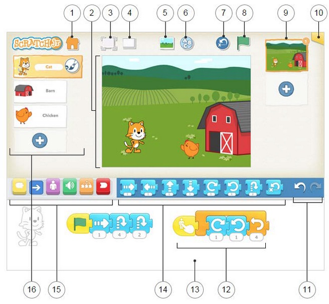

Today was the first day of class. The first thing I did was review what we were going to do today.
- Work together mostly
- Learn some class rules
- Learn about each other
- Learn Special Computer words
- Play some games. Today a lot!
- Have a snack. (Please remember)
- Learn how to use the tablet (turn it on, off, etc.)
- Make sure your tablet is ready for this class
- Meet a robot
- Learn about ScratchJr
We then talked about which languages we speak.
- We did a show of hands to see who speaks English, Japanese, or French. What about different combinations?
- I mentioned that in class we will use mostly English, some French, and some Japanese.
- I mentioned that I can also speak Portuguese and American Sign Language. One of the students speaks Korean, and he gave us an example.
Since this was the first class, I wanted to establish some ground rules. These included:
- Ask before you touch other computers.
- Don't listen to videos or internet or video games unless directly related to a project and with permission.
- Make it easy for others to work: be quiet, helpful, thoughtful
- Treat all equipment properly and clean up carefully.
- Take turns when speaking.
- Listen when others are speaking.
- Make this a fun place: Be respectful. Use nice language, touch, and manners.
I also mentioned some of my expectation for the kids, which is to say rules that help me keep the class safe and focused on learning and having fun.
- Listen when asked. Pay attention.
- Do when asked. As soon as is reasonable.
- Do as asked. Follow directions.
I also went over some important class procedures, and why they were there
- When you need to go to the bathroom, go. When you get out, WASH YOUR HANDS! (Why?) (Obviously this one is very important)
- When you don't understand, ask
- When you want to help, great! BUT, use words. Help without touching. (Why?)
- When someone helps you, listen carefully and use their good ideas. Do it yourself!
- When the teacher is busy, be patient.
The first game we played was the classic "name game". Kids were very excited and eager to meet the challenge. The rules were:
- Say the person's name and throw the newspaper to them.
- If it falls, go back to the begining
- Go in the same order each time
We did this a few times until everyone knew each other's name (especially me) and then we did it again to try for speed. We didn't go much faster, but had fun.
I prepared for the next game by talking about computer language. For example:
- There are special Words for computers
- Most of the special words are in English
- The meaning of special words is sometimes different than the usual word, for example, mouse.
We played a game whose purpose was to make sure everyone knew some basic vocabulary for user actions, and how to perform the actions. Since I expected to have to use this vocabulary often, I wanted to be sure the kids would know it. The rules were:
- If I say "Teacher Says" it means everyone does what I say.
- If I don't say "Teacher Says", no one does anything.
- If I don't say it, and you do it, you have to kneel for one turn.
- If I say it, and you don't do it, you have to kneel for one turn.
The kinds of vocabulary and actions we practiced were:
-
First Set: Tap, Hold, Let Go
-
Tap your nose
-
Tap your nose 2 times, 3 times, 4 times, etc.
-
Tap slowly, quickly, smoothly, roughly, soft, hard
-
Double Tap your nose
-
same with ear, knee, table, som classmate, computer
-
Tap and Hold
-
Double Tap and Hold
-
Let go
-
Second Set: Drag and Scroll
-
Tap and Drag on on the table.
-
this means TAP and HOLD and DRAG and (sometimes) LET GO
In the future I plan to go over:
- scroll on the table, face, leg, etc.
- scroll up, scroll down, scroll right, scroll left
We made sure everyone could turn the tablet on, off, and get to the Scratch program.
We then started using the scratch program itself. Most of the kids knew how to open the program and start a new project.
Once we were at the main interface.

I went over the top row of buttons.
- I also made sure they knew the yellow start button
- I added a few of the blue motion buttons
- I finished with the red stop buttons.
Once the kids were at this stage they started to have questions, and some of the things we talked about were:
- How do you change the background?
- How do you rotate a sprite?
- How do you draw lines and shapes in the sprite?
- How do you take a picture and use it in your background or sprite?
We had a somewhat late snack, and all the kids continued working through it. At the end, kids showed off their original creations to the group--with some inattention 😃
The homework assignment was to make a scratchjr. project where the sprite would walk to each corner of the view area when the start button is pressed.